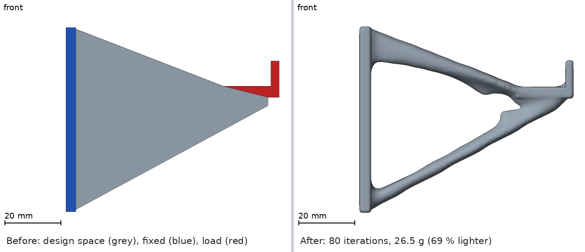

Install steps for
How it works
-
Describe the part
A YAML file names one STL file for each region and the force on each load. Or describe the part in words: the skill
part-to-topoptwrites the files. -
Run and watch
A live dashboard in the browser shows the shape while it forms. An agent client can start the run through the MCP server.
-
Print the result
The result folder has a smooth
final.stl. The filemetrics.jsongives the mass, the stiffness and a print report.
topopt run examples/hook/hook.yaml --out runs/hook --dashboardBefore and after
85.6 g → 26.5 g 69 % less
The T-shirt wall hook of examples/hook/, after 80 passes.

Install
The recommended route is the Claude Code plugin. All clients use the same MCP server and need uv.
curl -LsSf https://astral.sh/uv/install.sh | sh-
Claude Code Recommended
claude plugin marketplace add chartergroup/topopt-demo#v0.1.0 claude plugin install topopt@topopt-demoThen start
claudeand type/topopt:start-here. The first start takes 1 to 3 minutes. Full steps -
Claude Desktop
uv run --no-project --python 3.12 packaging/mcpb/build.pyRun it in a clone of the repo. It builds an extension file. Open that file with Claude Desktop. Full steps
-
Cursor
git clone https://github.com/chartergroup/topopt-demoThe clone has the file
.cursor/mcp.json. Open the folder in Cursor. Full steps -
Codex CLI
git clone https://github.com/chartergroup/topopt-demoThe clone has the file
.codex/config.toml. Startcodexin the repo root. Full steps -
VS Code
git clone https://github.com/chartergroup/topopt-demoMake the file
.vscode/mcp.jsonfrom the snippet in the docs. Then use agent mode. Full steps -
Gemini CLI
git clone https://github.com/chartergroup/topopt-demoMake the file
.gemini/settings.jsonfrom the snippet in the docs. Startgeminiin the repo root. Full steps
Skills and roles
Two skills
start-here- Checks the machine, then takes you from a part to a printable STL. Source
part-to-topopt- Turns a plain description of a part into a problem YAML and region STL files. Source
Four roles
- Lead design engineer
- Finds the goal, the loads and the print limits. Reviews the result.
- CAD engineer
- Makes the design space, the fixed regions, the load regions and the keep-outs.
- FEA engineer
- Sets the loads and the supports, starts the run and reads the numbers.
- Print engineer
- Checks fit on the bed, thin members, overhangs and supports.
A client without sub-agents gets the role texts from the MCP tool team_guide.
Contributing
The code is on GitHub. CHANGELOG.md lists the changes of each release.
License
topopt has the MIT License. The packages that it uses keep their own licenses. Every main dependency is permissive, except mmapy (GPL-3.0-or-later). THIRD_PARTY_NOTICES.md lists each one.